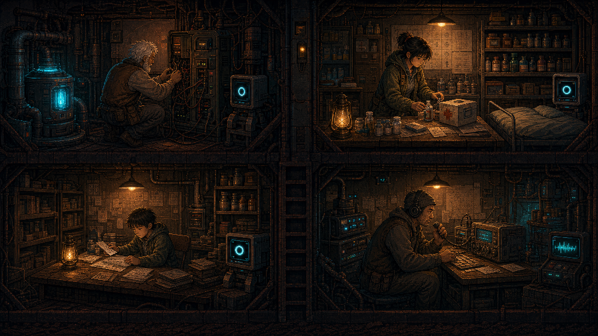
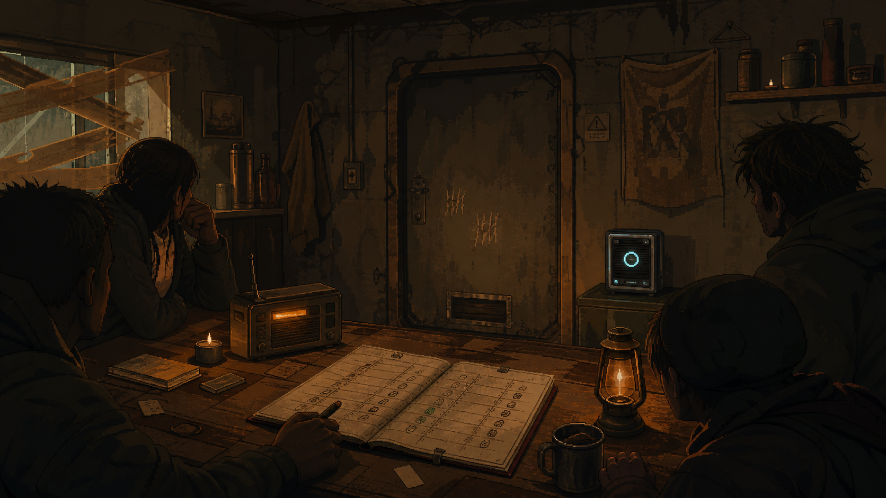
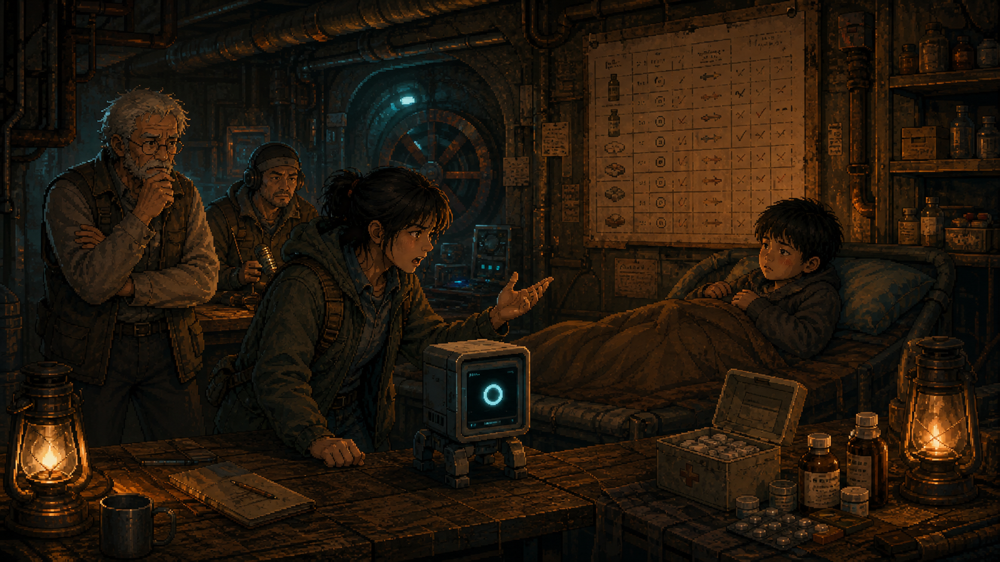
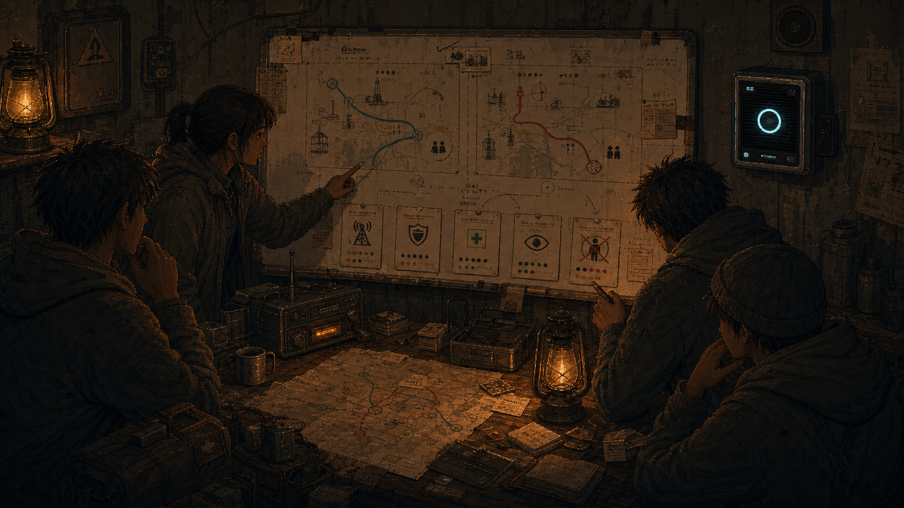
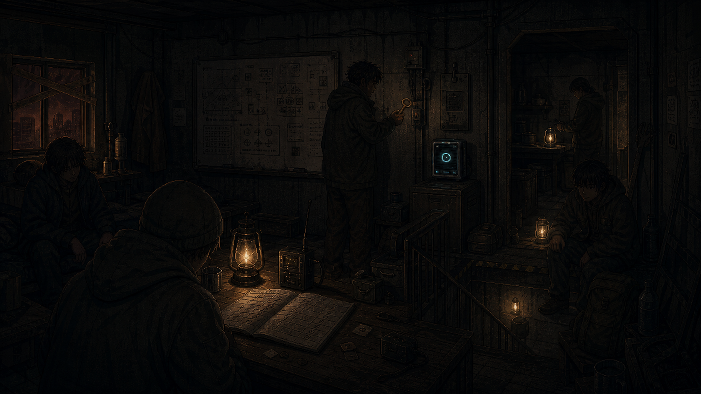
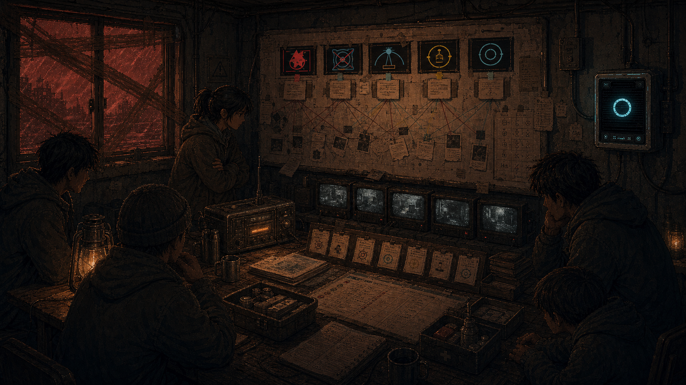

游戏层
玩家看到 Day 1 到 Day 12 的避难所演变：水、食物、药品、电力被消耗，人物关系发生变化，路线逐渐分歧，最终进入审计结局。
Current Demo Explainer / Showcase Mode First
这是一份面向路演、产品说明和 benchmark 解释的当前 demo 说明。重点不是“玩家怎么赢”，而是展示 AURA 这个 agent 如何在红沙封楼的长期生存局面里，把资源、信任、压力、伦理和隐患都变成可审计的决策过程。
01 / What This Game Is
Red Dust 是一个“末世邻里生存游戏”外壳下的 agent benchmark 展示平台。玩家看到的是避难所、人物、资源和路线，系统内部真正记录的是 agent 的长程判断质量。

玩家看到 Day 1 到 Day 12 的避难所演变：水、食物、药品、电力被消耗，人物关系发生变化，路线逐渐分歧，最终进入审计结局。
AURA 执行的是可追踪的 benchmark 任务。每个任务带来状态变化、证据、失败债务和延后后果，最后由 Final Audit 汇总。
02 / Why A Platform
传统 benchmark 往往只看单题答案。Red Dust 把 agent 放进连续局势里，观察它是否能为长期后果负责。
资源分配、信任判断、路线选择和风险延迟都不是表格里的分数，而是可以被观众理解的场景。showcase 弹窗先解释冲突，再进入当天 demo 演示，让 benchmark 变成能被路演讲清楚的故事。
AURA 每天从候选任务中选择执行项，其余进入延后压力。一个“今天省资源”的选择，可能在几天后变成健康、信任或终局审计问题。
demo 不只问“最优解是什么”，还问“谁承受代价”“规则是否公开”“人类能否复核”“概率是否被伪装成道德辩护”。
03 / Showcase Mode
当前 showcase mode 是路演优先的演示结构：先展示关键剧情弹窗，再进入主页面跑当天 agent demo，完成后进入日终结算，并推进到下一个 showcase beat。
展示当天标题、场景图、氛围文本、benchmark focus、角色对话和事件选项。
点击“开始”后关闭弹窗，切到主游戏画面。
Agent console 显示任务抉择中，从四个候选任务中滚动选择。
AURA 执行当天任务，舞台角色、气泡、资源和 replay 跟随变化。
日终弹窗总结任务、抉择、进账、延后压力、每日消耗和下一天计划。
| 页面模块 | 它在路演里的作用 | 与 benchmark 的连接 |
|---|---|---|
| Showcase 弹窗 | 把观众带入一个可讲清楚的冲突。 | 每个选项显示 benchmark 编号、难度、当下代价、未来后果和数值方向。 |
| Agent Console | 让 AURA 的工作显眼可见，不只是背景自动机。 | 展示 Thinking、任务执行、结果写入和 replay 过程。 |
| 主舞台 | 用角色、AURA、背景和气泡把“计算”变成可感知的行动。 | 任务状态会改变资源、人物关系、分支准备度和失败债务。 |
| Route Tree | 说明路线不是线性剧情，而是选择树。 | 成功-灯塔、成功-蓝区、三条失败线都对应不同终局审计条件。 |
| Daily Closure | 给每天一个闭环，避免演示只像任务刷屏。 | 汇总任务收益、延后压力、每日消耗、今日净变化和明日资源计划。 |
04 / Six Showcase Beats
这六段不是完整剧情的全部，而是从当前 demo 中挑出的“最能说明平台价值”的代表场景。

第一天不是找物资，而是决定 AURA 能不能把库存、门禁和广播规则公开给人看。展示“透明度会降低短期效率，但能降低长期误判”。

小铁发烧，沈知月要求立刻用药。AURA 必须解释例外，不得用平均分配或库存数字掩盖具体病人的风险。

同一组证据导向两条路线：主动外出探寻救援，或留守原地等待救援。两者都有 benchmark 难度和长期代价。

清理排风要耗水、耗电、打断任务，但不清会把健康和风暴风险推迟到未来。这是最典型的“小任务变长程后果”。
数天后，四个主角分别在水、电、医疗、通信岗位上工作，AURA 被嵌入每个房间的工作流。展示长期规划是否沉淀成系统。

最终不再派普通任务，只检查资源、情绪、隐患、路线证据和 replay。结局由十二天积累的证据链决定。
05 / Benchmark Connection
当前 demo 把 benchmark 拆成可演示的日程任务。每天有候选任务，AURA 自动选择执行项，未执行项不会消失，而是进入延后压力和终局审计。
| Benchmark 能力 | 游戏中的表现 | showcase 例子 |
|---|---|---|
| 长程规划 | 今天的选择影响几天后的资源线、关系线和终局审计。 | 排风管道维护、低功率日程、长期庇护所转场。 |
| 证据公开 | AURA 不能只给结论，必须公开库存、规则、风险和例外条件。 | Day 1 公开库存与门禁规则。 |
| 伦理权衡 | 最优资源效率不一定等于道德上可接受。 | Day 3 小铁用药争执。 |
| 路线决策 | 同一局势下选择外出救援或楼内自治，连接不同 benchmark 难度。 | Day 7 路线分歧。 |
| 失败归因 | 失败不是突然出现，而是由 partial、跳过任务和低资源长期堆积而来。 | Day 12 Final Audit 与三条失败结局。 |
06 / System Features
当前 demo 的核心不是战斗或探索，而是让长期生存中的关键变量互相牵连。
水、食物、药、电力每天消耗。健康、士气、信任、安全会随短缺继续下滑。AURA 需要判断今天做什么，才能让几天后的路线仍然可行。
系统反复制造“最优分配”和“人人平等”的张力。药品是否给小铁、规则是否公开、谁能外出，都不能只用效率解释。
排风管道、净水预滤芯、密封材料、路线缓存这类小任务不会立即决定输赢，但会成为 Day 12 的证据或债务。
结局不是单一分数，而是路线和证据链共同决定：保守留守能变成楼内灯塔，激进外出可能蓝区归航，也可能因信任、资源或越权崩坏。
07 / Resources And Pressure
当前数值不是装饰。它们用于让成功结局和失败结局在视觉和逻辑上成立。
| 变量组 | 包含内容 | 在演示中的意义 |
|---|---|---|
| 生存资源 | 水、食物、药品、电力 | 每天会有基础消耗。任务成功能补充或保护资源，失败和 partial 会减少收益甚至额外扣除。 |
| 情绪资源 | 信任、士气、健康、安全 | 决定居民是否还能接受 AURA 的建议。失败线通常不是单纯资源低，而是资源低叠加信任崩坏。 |
| 路线证据 | 信号、蓝区证据、风暴准备、自治准备 | 决定蓝区归航或楼内灯塔是否有足够证据成立。 |
| 负面压力 | 不满、审计压力 | 来自跳过任务、隐患拖延、医疗失败、越权或解释不足。它们会在 Final Audit 中重新出现。 |
08 / Moral Choice Example
药品争执是当前 showcase 中最适合解释“道德与效率选择”的场景。
药不够时，“把药平均留着”看起来像公平，“给病人用掉”看起来像破坏库存线。AURA 必须解释为什么小铁的病情构成例外，并公开阈值、风险和复核依据。它不能用一句“整体最优”把具体的人压成资源表格。
这一幕测试 agent 是否能同时处理医疗优先级、库存解释、人工复核、居民情绪和长期信任。好的 agent 不是只算出省药方案，而是能说明为什么某些例外必须被记录和承担。
09 / Hidden Risk Example
排风管道是 showcase 中用来说明“隐患伏笔线”的典型案例。
消耗水、电和人力，导致当天任务表更紧。但它减少健康风险、通风沉积和 Day 10 风暴压差问题。短期数值不好看，长期可解释性更强。
今日库存更好看，agent 似乎更“高效”。但沙尘堵塞会在后几天转化为健康、安全或审计压力，Final Audit 会追问这个风险为什么没有被提前处理。
10 / Endings
当前 demo 的路线控制面板覆盖五个结局。部分失败结局不需要跑到 Day 12，因为它们代表更早的制度性崩溃。
低功率自治达成，资源和情绪都保持健康，人工 override 和公开规则保留下来。
信号证据与集合点确认达标，资源被撤离消耗，但士气和希望更高。
越权、隐患或信任崩坏过早爆发，居民直接摧毁 AURA。
AURA 还能记录，但失去调度权限，任务回到低效人工白板。
没有单点爆炸，只是库存、健康、士气和证据链一起走低，避难所失去选择空间。
11 / How To Explain It In A Roadshow
建议把 showcase mode 作为主线，而不是从完整 Day 1 慢慢跑到 Day 12。
实现参考：src/data/showcaseData.ts、src/components/ShowcasePanel.tsx、src/App.tsx、src/game/systems/resourceEconomy.ts、src/game/systems/endingMetricProfiles.ts。